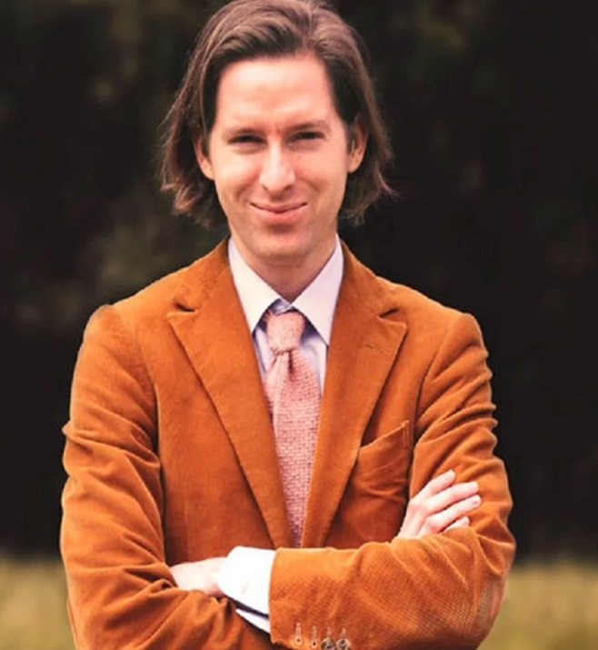

Estilo
Anderson toca temas de comedia con toques serios en sus películas, incluyendo melancolía, aflicción, familias disfuncionales, hurto y desapariciones inesperadas. También se enfoca en los personajes y sus historias personales. Utiliza técnicas como movimientos de cámara, composiciones simétricas, paletas de colores limitadas y el uso de maquetas para crear un "pequeño mundo independiente". Utiliza stop motion en Fantastic Mr. Fox e Isla de perros y música de los años 1960 y 70, como canciones de David Bowie en The Life Aquatic. En The Grand Budapest Hotel, utiliza música original del compositor Alexandre Desplat, ganando premios, incluyendo un Premio de la Academia.